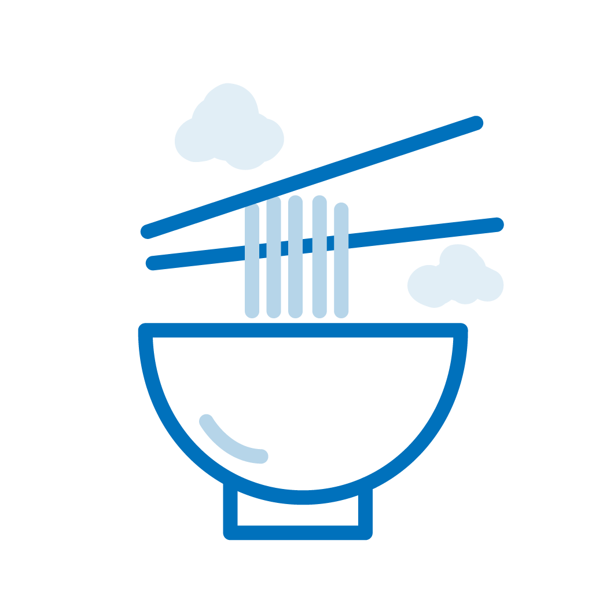
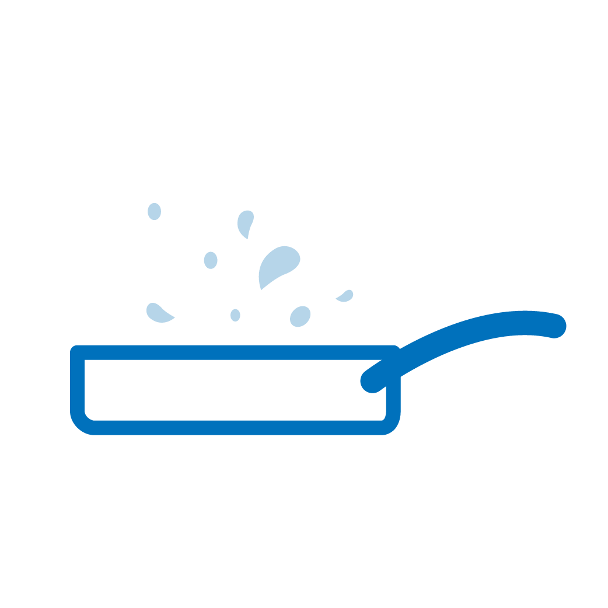

· 원인






· 특징
① 일반적으로 뜨거운 물에 먼저 닿은 부분의 피부가 가장 깊은 손상을 입습니다.
② 정수기, 커피, 라면 등 일상생활에서 쉽게 위험에 노출 될 수 있으며, 화상 원인의 가장 많은 비율을 차지합니다.
③ 옷에 뜨거운 액체가 흘렀을 때 즉시 탈의 하지 못하여 화상이 깊어지는 경우가 있으며, 반대로 무리한 탈의 시도로 물집이 벗겨질 수도 있습니다. (-> 옷을 잘라서 탈의하거나 옷을 입은 채로 차가운 물에 열기를 식히는 것이 필요합니다.)